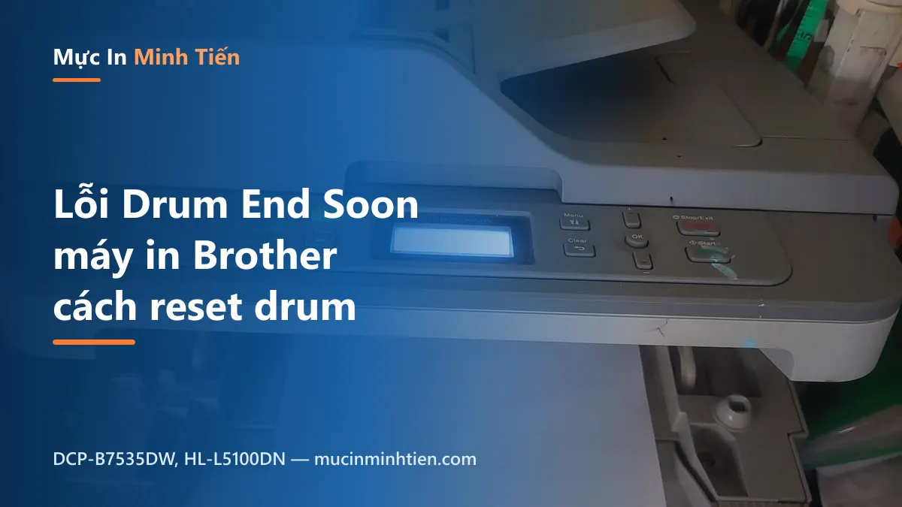
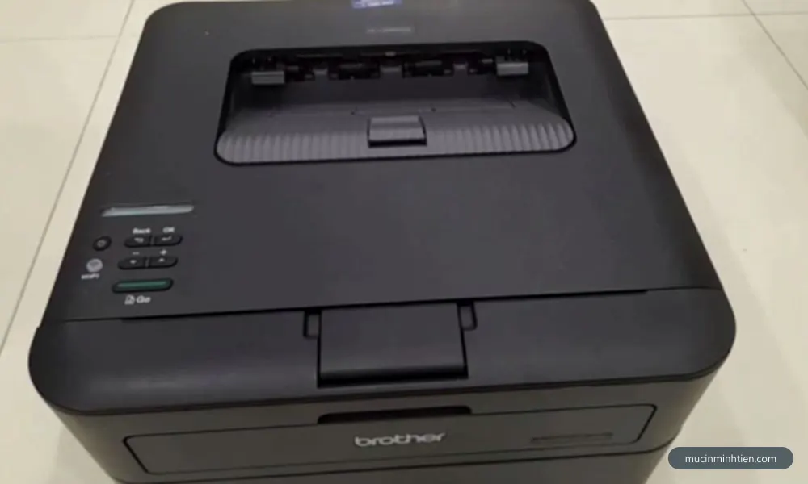
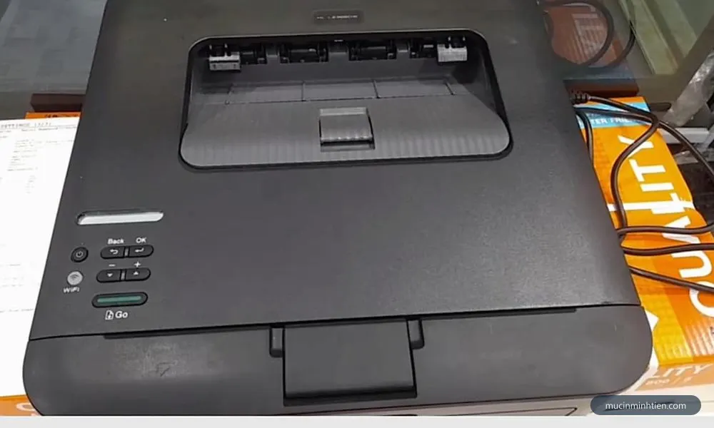
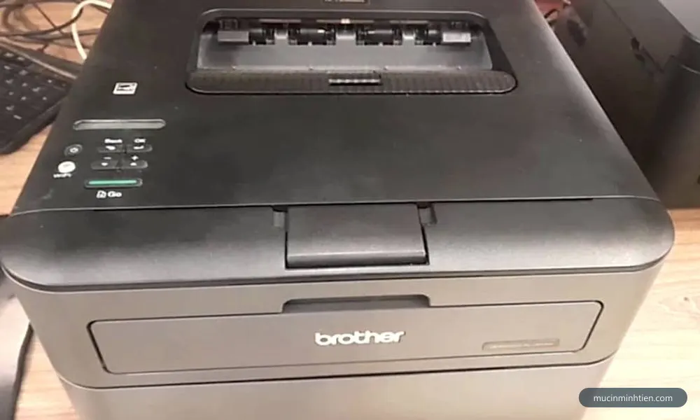
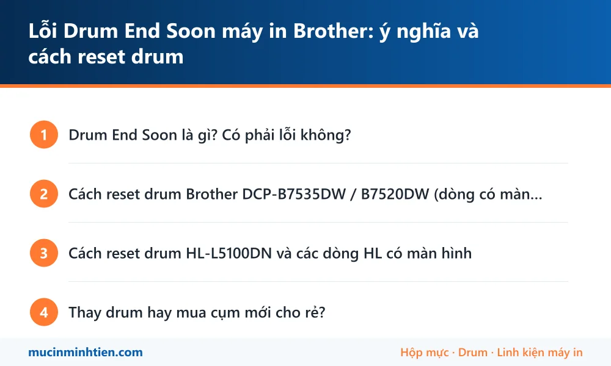

Lỗi Drum End Soon máy in Brother: ý nghĩa và cách reset drum

Máy in Brother đang chạy ngon lành bỗng hiện dòng "Drum End Soon" trên màn hình — nhiều người tưởng máy sắp hỏng nặng. Thực ra đây chỉ là cảnh báo sớm, và bạn có vài lựa chọn xử lý tùy tình trạng thật của trống từ. Bài này giải thích rõ và hướng dẫn reset đúng cách cho các dòng đang phổ biến ở Việt Nam.
Drum End Soon là gì? Có phải lỗi không?
Trống từ (drum) trên máy Brother được đếm tuổi thọ theo số trang — dòng phổ thông khoảng 12.000 trang. Khi bộ đếm gần cạn, máy hiện Drum End Soon để bạn chuẩn bị; khi cạn hẳn sẽ chuyển thành Replace Drum. Máy vẫn in bình thường ở giai đoạn Drum End Soon.
- Bản in vẫn đẹp: cứ dùng tiếp, chuẩn bị sẵn drum mới là được.
- Bản in đã mờ, sọc, có chấm lặp lại đều: drum mòn thật rồi — nên thay sớm, đừng đợi máy khóa. (Xem thêm bài máy in bị sọc đen dọc để phân biệt sọc do drum hay do gạt mực.)

Cách reset drum Brother DCP-B7535DW / B7520DW (dòng có màn hình)
- Thay drum mới: mở nắp trước, rút cả cụm drum + hộp mực, tháo hộp mực khỏi drum cũ, lắp vào drum mới rồi đưa cả cụm vào máy.
- Vẫn để nắp trước mở, máy đang bật.
- Bấm giữ nút OK khoảng 2 giây — màn hình hiện mục Drum.
- Chọn Yes / xác nhận reset (tùy đời máy là phím mũi tên lên hoặc phím số 1).
- Đóng nắp trước — thông báo biến mất, bộ đếm drum về 100%.

Cách reset drum HL-L5100DN và các dòng HL có màn hình
- Thay drum mới như trên.
- Bấm Menu (hoặc ▲▼ để vào menu) → tìm mục Machine Info / Thông tin máy → Reset Parts Life (một số đời cần mở nắp trước thì menu này mới hiện).
- Chọn Drum → xác nhận Reset → Yes.
- Thoát menu, đóng nắp — hoàn tất.
Mỗi đời máy lệch nhau chút ở tên menu, nhưng nguyên tắc chung của Brother là: mở nắp trước → gọi menu reset (giữ OK hoặc vào Machine Info) → xác nhận. Nếu bạn dùng dòng HL-L23xx không màn hình, xem bài cách reset máy in Brother báo hết mực và reset drum — thao tác bằng nút GO.

Thay drum hay mua cụm mới cho rẻ?
Với dòng B7535DW, có 2 lựa chọn: thay trống rời (giữ vỏ cụm cũ, chi phí thấp) hoặc thay nguyên cụm drum (bền, lắp nhanh). Cửa hàng có sẵn drum và cụm trống Brother trong bảng giá — hoặc gọi 0915 510 203 đọc model máy, kỹ thuật viên tư vấn phương án rẻ nhất và có thể thay drum tận nơi luôn tại TP.HCM.
